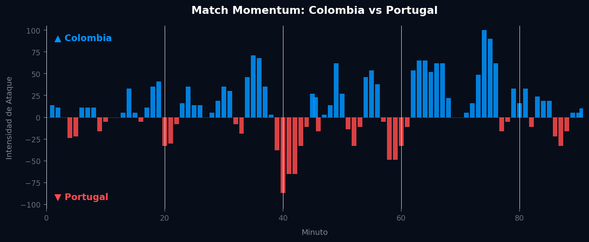
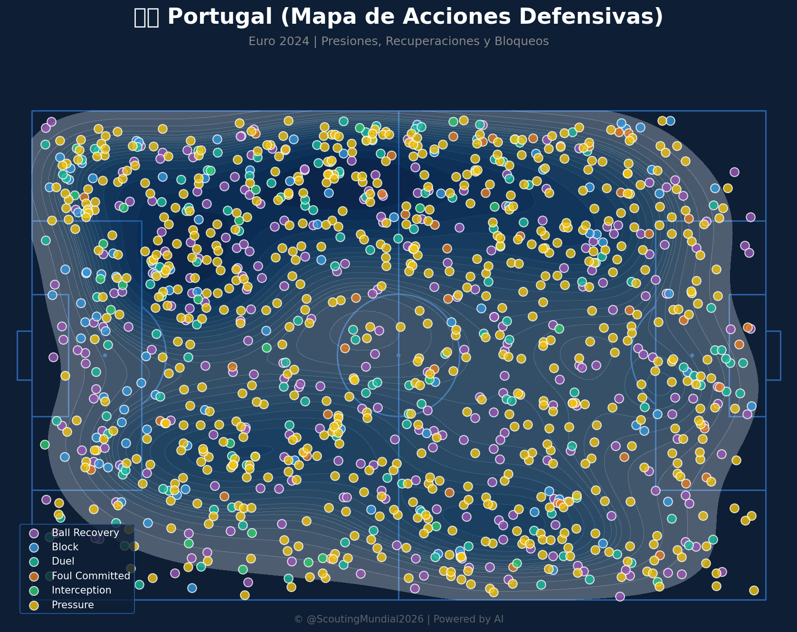
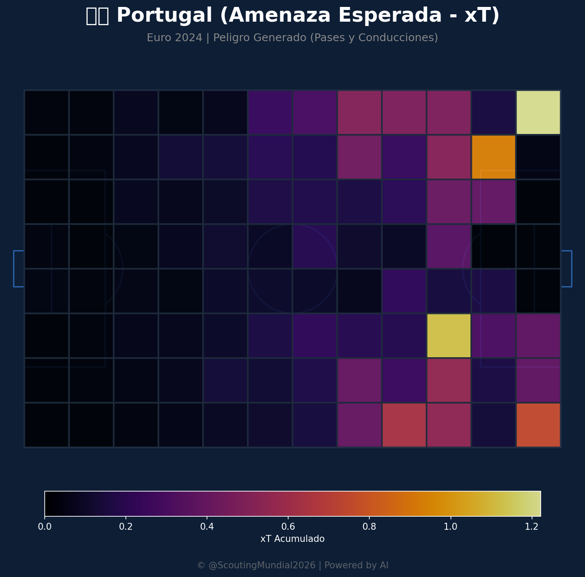
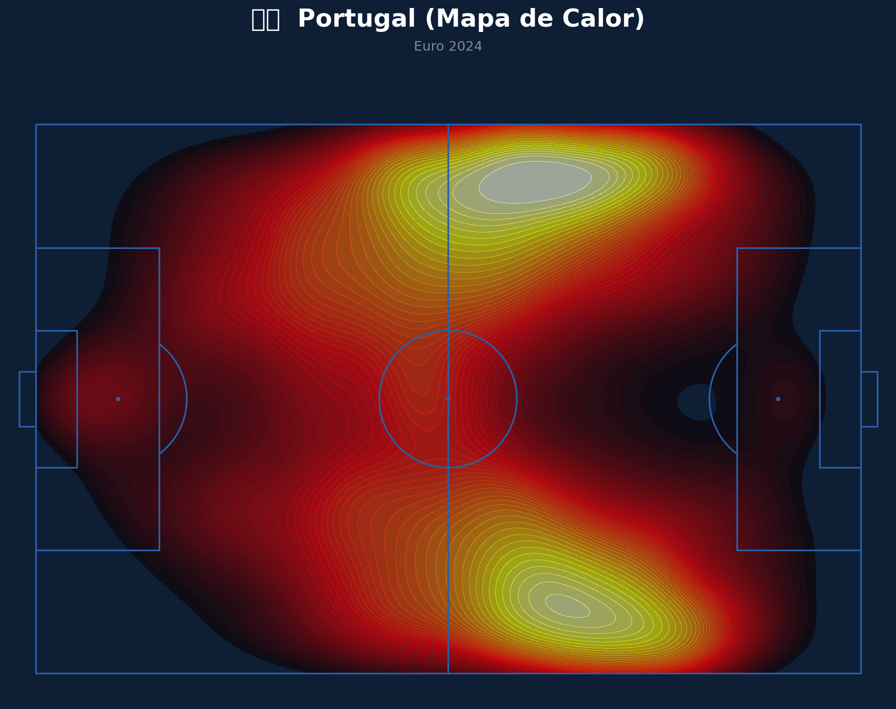
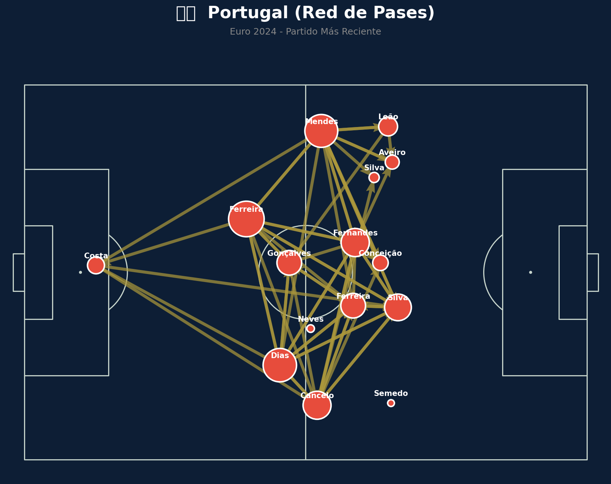

Grupo K
 Portugal
Portugal
Colombia vs Portugal
📅 2026-06-27 · 🕒 22:00 (Local)
Colombia

0 - 0
FINALIZADO
Portugal
📅 2026-06-27 · 🕒 22:00 (Local)
Portugal
El choque entre Colombia y Portugal, correspondiente al Grupo K, culminó en un tenso empate sin goles (0-0) que reflejó una intensa batalla táctica más que una exhibición ofensiva. Ambos equipos priorizaron la solidez defensiva, resultando en un encuentro cerrado donde las oportunidades claras de gol fueron escasas y muy disputadas. Colombia intentó imponer su ritmo con posesión, mientras que Portugal buscó la verticalidad en transiciones rápidas. A pesar de la ausencia de goles, el partido estuvo cargado de intensidad emocional, con duelos físicos constantes en el mediocampo y una palpable tensión por la importancia de los puntos en juego. Ni la creatividad individual ni las estrategias ofensivas lograron quebrar las bien organizadas líneas defensivas rivales, llevando a un justo reparto de puntos.
El flujo de intensidad del partido fue un claro reflejo del empate sin goles, con una batalla por el control que, aunque no se tradujo en goles, sí dictó las fases de dominio. Colombia, con un 58.5% de dominio de intensidad, mostró una persistencia mayor en la búsqueda del ataque, alcanzando su pico máximo de 100.00 en el minuto 74', momento en el que ejerció una presión asfixiante sobre la defensa portuguesa. Portugal, aunque dominó el 33.0% del partido, tuvo su momento de máxima amenaza en el minuto 40', con una intensidad de ataque del 87.00, donde mostró su capacidad para golpear con rapidez.
El "Match Point" (Punto Crítico) se situó precisamente en el minuto 40', cuando una intervención providencial del guardameta colombiano desvió un potente remate de Joao Félix desde el borde del área. Esta atajada no solo frustró la embestida más peligrosa de Portugal en su pico de intensidad, sino que también mantuvo el marcador en cero y sirvió como un punto de inflexión táctico. Colombia, tras este susto, reajustó sus marcas y reforzó la disciplina defensiva, logrando neutralizar los intentos lusos y consolidando su postura para el resto del encuentro.

Colombia exhibió una notable madurez táctica, dominando la posesión y buscando controlar el mediocampo con una presión constante. Su fortaleza defensiva fue evidente, manteniendo el arco en cero ante un ataque portugués con calidad. La línea de cuatro defensas, complementada por el trabajo incansable de los mediocampistas, ahogó la creatividad rival y recuperó balones con eficacia. Sin embargo, la fase ofensiva careció de la chispa final necesaria; a pesar de generar la mayor parte del momentum, la precisión en el último pase o la definición clínica en el área fueron los eslabones débiles, impidiendo que su superioridad en intensidad se tradujera en goles.
Portugal planteó un partido rocoso, priorizando el orden defensivo y la capacidad de anular los circuitos de juego colombianos. Supieron absorber la presión en largos tramos del partido, demostrando una excelente organización táctica y disciplina posicional. Su principal virtud residió en la resiliencia de su zaga y el trabajo de sus mediocampistas en la contención, especialmente en la desactivación de las transiciones rápidas colombianas. No obstante, su propuesta ofensiva fue más intermitente, dependiendo en exceso de acciones individuales y transiciones rápidas que no lograron concretar debido a la sólida defensa cafetera y a una notable falta de contundencia en la finalización.
El duelo táctico entre los entrenadores fue un empate técnico, donde la cautela y la solidez defensiva prevalecieron sobre cualquier riesgo ofensivo. Colombia buscó controlar el balón y el ritmo, pero se encontró con un muro portugués infranqueable en los últimos metros. Portugal, por su parte, se apoyó en su capacidad de resistencia y en la esperanza de un contragolpe letal que nunca llegó a materializarse ante una bien plantada defensa colombiana. El 0-0 es un veredicto justo y lógico para un partido donde ambas escuadras mostraron excelentes cualidades defensivas y una disciplina táctica encomiable, pero carecieron del ingenio o la contundencia necesaria para romper el equilibrio y llevarse la victoria.







